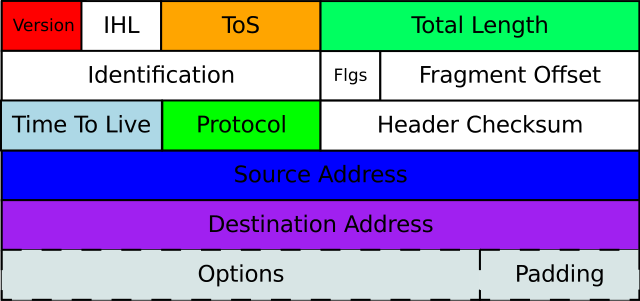
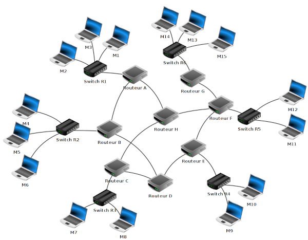
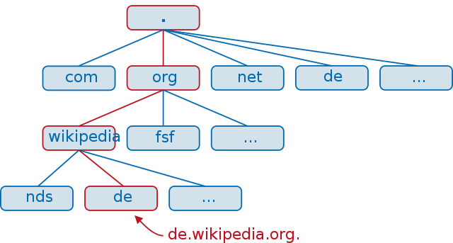
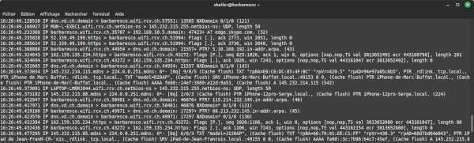
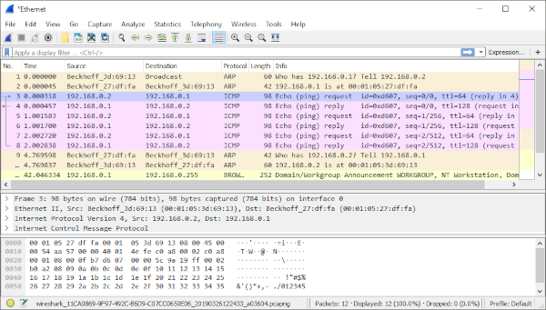
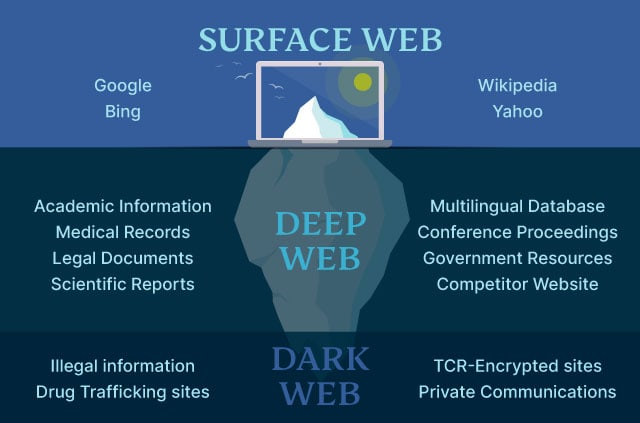

TP ESDN01 : Les réseaux informatique
Contents

TP ESDN01 : Les réseaux informatique#
Objectifs#
acquérir le vocabulaire informatique des réseaux
identifier les différents éléments d’un réseau informatique et les éventuelles faiblesses
distinguer la localisation des données transitant sur un réseau informatique
Les réseaux informatiques#
Derrière l’écran, il y a une infrastructure
Un réseau informatique est une infrastructure qui permet à un ensemble de machines de communiquer entre elles des données informatiques. Ces données informatiques sont formées, comme nous l’avons vu, de bits.
Ces machines peuvent être :
des serveurs web (comme gymnase de Beaulieu)
des serveurs mail (comme Eduvaud)
des serveurs de fichiers (comme fs10 -> enseignement)
des ordinateurs de bureau comme la machine que vous utilisez actuellement
ou votre smartphone …
Ces machines sont reliées entre elles par toute une infrastructure active et passive. Un élément actif du réseau est un équipement qui est chargé d’assurer la répartition des signaux alors qu’un élément passif ne le sont pas (comme une antenne ou un câble réseau).

Exercice 1 : les différents éléments d’un réseau domestique#
Sur l’image, distinguez les
éléments actifs
éléments passifs
avec leur nom
Exercice 2 Le réseau du gymnase#
A l’aide de google, ChatGPT ou n’importe quel outil de recherche que vous jugerez utile, identifiez et nommez les différents éléments physiques nécessaires au fonctionnement d’un réseau informatique plus grand tel que celui du gymnase de Beaulieu.
Vous devez être capable de répondre aux questions suivantes :
Qu’est-ce qu’un réseau filaire ?
Les ordinateurs de la salle B-310 fonctionnent-ils en WIFI ou d’une façon différente ?
Qu’est-ce qu’un switch ? Un hub ?
Comment est connectée l’imprimante de la salle ?
Communiquer sur un réseau informatique#
Pour pouvoir communiquer, il faut se mettre d’accord sur des règles. C’est ce que l’on appelle un protocole de communication
On peut faire une analogie avec un appel téléphonique qui doit suivre un certain nombre de règles:
Protocole par commutation de paquets#
Une donnée (data) transmise sur un réseau informatique peut-être :
une page web
un email
un message sur un réseau social
un son
un fichier texte
etc..
est souvent de grande taille. Statistiquement (mathématiquement), plus la donnée est grande, plus il y a des risques pour qu’un élément réseau physique soit défaillant durant la transmission et que la transmission se finisse en échec.
Pour résoudre ce problème, on a recourt à la commutation de paquets : une grande donnée (page web, image, email, etc..) est découpée en petits paquets. Chaque paquet peut prendre un chemin différent entre une source et un destinataire. C’est ensuite au destinataire de recomposer la donnée initiale.

Chaque paquet est formé de la donnée brute et de métadonnées (une métadonnée est une donnée qui fournit de l’information sur une autre donnée) qui permet de :
l’acheminer entre une source et un destinataire
sa durée de vie (c’est-à-dire s’il peut être considéré comme perdu et devrait être renvoyé)
le type de service
et d’autres informations nécessaire
L’un des protocoles encore largement utilisé est Internet Protocol v4 (ou IPv4). Les paquets IPv4 sont formées d’un en-tête (ou header) qui contient toutes les métadonnées du paquet et des données brutes (data) que l’en-tête décrit.

Clients et serveurs#
L’adresse de la source et du destinataire sont les éléments centraux qui permettent de pouvoir acheminer un paquet d’un point A à un point B.
La source (la machine qui envoie des données) est un serveur
Le destinataire (la machine qui reçoit des données) est un client

Adresse IP#
L’adresse d’une machine est décrite sous la forme d’une adresse IP (IP = Internet Protocol). Il s’agit de 4 nombres séparés par des points :
XXX.XXX.XXX.XXX
Exercice 3 (Internet Protocol)#
Répondez aux questions suivantes en utilisant tous les outils à disposition sur votre machine :
moteurs de recherche
ChatGPT
votre cerveau (surtout)
Qu’est-ce qu’une adresse IP ?
combien de bits faut-il pour coder une adresse IP ?
combien d’adresses IP est-il possible de produire ?
Pourquoi parle-t-on d’IPv4 ? Mobilisez les connaissances vues au cours pour répondre.
Recherchez l’adresse IP de votre ordinateur. Quelle similitudes avec l’adresse IP de vos voisins
Dans un navigateur web de votre préférence, connectez-vous aux adresses écrites sur le tableau.
A quel service correspondent ces adresses ?
Où se situent les serveurs physiques ?
Réseau de réseaux (Internet)#
Le réseau du gymnase est formé de plusieurs réseaux locaux (LAN)
 .
.
Internet n’est rien d’autre que l’interconnection de réseaux locaux. Cette interconnection se fait au travers d’un élément actif du réseau appelé passerelle.
La passerelle est un point unique qui permet de router les paquets, c’est-à-dire de diriger ceux qui ne sont pas à destination d’une machine du réseau local, vers le réseau global.

Nom de domaine, nom de machine#
Il est difficile de mémoriser le nom d’une machine avec son adresse IP. Pour faire cela, on utilise un nom. Ce nom est basé sur le Système de Noms de Domaines (en anglais Domain Name System), abbrégé en DNS.
DNS#
Le DNS associe un nom à toute adresse IP.
Le système de noms de domaine est constitué par une hiérarchie. Le sommet est la racine DNS et on la représente par un point . .
La suite de la hiérachie DNS est formée de :
Top Level Domain (TLD) : qui sont les extensions de pays :
.ch,.itou.de, ou des extensions standard : commercial.com, organisation.org, réseau.net. Il existe environ 1800 TLDun nom de sous-domaine comme par exemple
gymnasedebeaulieu,googleoucff
Ces deux éléments (TLD + nom de sous domaine) représentent un nom de domaine et se lit de droite à gauche:
cff.chgymnasedebeaulieu.chgoogle.chgoogle.com
Ce qui vient à droite avant le nom de domaine représente soit
Une machine : l’adresse
www.google.chreprésente la machinewwwdu nom de domainegoogle.chUn sous-domaine. Au Royaume Uni par exemple, le choix a été fait de régler les adresses avec un TLD et un SLD (Second Level Domain) :
.ukest le TLD, suivi d’un SLD (par exemple.com.ukpour les sites commerciaux,.gov.ukpour ceux du gouvernement, etc..)

Exercice 4 (DNS et URL)#
quel est le nom de votre machine ?
quel est l’adresse IP du serveur www.gymnasedebeaulieu.ch
Exercice 5 : Tout ensemble#
Dessinez, en groupe, les différents éléments physiques du réseau de la salle B-310 et du gymnase avec les différents éléments vus :
type d’élément du réseau
adresse IP
services
Et la vie privée dans tout cela ?#
On constate que:
tous les protocoles, règles et normes sont ouverts par design puisque l’écosystème de machines est très disparate.
toutes les communications ne sont pas cryptées
Des outils comme wireshark ou tcpdump ont été développés. Ces outils permettent de capturer, lire et analyser les paquets IP qui transitent à travers une ou plusieurs interface réseau.

tcpdump via un Terminal

tcpdump via un Terminal
Exercice 6 : Protéger la vie privée#
Comment protéger les informations qui transitent sur Internet ?
Qu’est-ce qu’un VPN ?
Deep et dark web#

Pour aller plus loin#
Netblocks : l’état en temps réel de l’Internet
OurWorldInData : des chiffres et ordres de grandeur de l’Internet au niveau mondial
l’outil tcpdump qui permet de capturer les paquets transitant sur une interface réseau.
l’outil wireshark qui permet de mener plus loin une analyse des paquets réseau
le navigateur TOR qui permet de naviguer sur le web de façon sécuritaire et anonyme